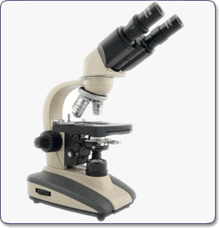

Con frecuencia la Ciencia y la Técnica van de la mano, casi todos los avances científicos han sido el resultado de nuevos avances técnicos, esto es particularmente ilustrativo en lo referente al uso del microscopio. Al descubrimiento de la célula se llegó gracias a una serie de descubrimientos científicos que estuvieron ligados a la mejora de la calidad de los microscopios. Uno de los pioneros en la construcción de estos aparatos fue Anton van Leeuwenhoek.

Explicar la importancia que tiene el desarrollo e invención del microscopio para identificar y estudiar a los microorganismos.
1. Para iniciar nuestra observación del periódico, la realizaras a simple vista y cuidadosamente. Anota que observaste.
2. Ahora utiliza la lupa para observar el mismo trozo de periódico. Dibuja lo que observaste.
3. Por ultimo coloca el periódico sobre el portaobjetos y agrega una gota de agua y posteriormente coloca el cubre objetos, realiza tu observación con el objetivo de 10x (de menor aumento) y dibuja.
4. Ahora realiza de ser posible con el objetivo de mayor aumento. Explica que observaste y dibújalo.
5. Ahora realiza lo mismo con el ala del insecto que colectaste
Durante siglos la humanidad desconoció las causas de las enfermedades así como la descomposición de los alimentos, ya que no se conocían los microorganismos.
En el siglo XVII, Leeuwenhoek perfecciona el microscopio al pulir lentes muy curveadas. Esto le permitió observar más de cerca a los seres vivos; y de esta manera se pudo comprender el porque de las enfermedades causadas por la descomposición de los alimentos. La tecnología proporciono al microscopio una mejor resolución para realizar observaciones más detalladas hoy en día por el hombre, lo que ha permitido descubrir la principal causa de muchas enfermedades en el ser humano.